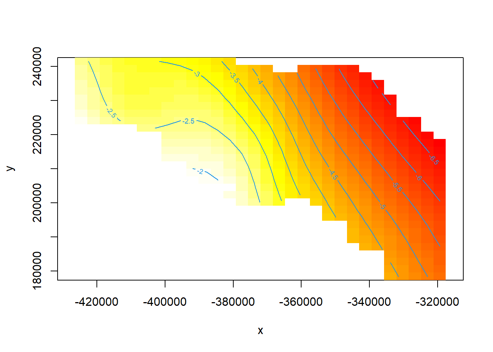
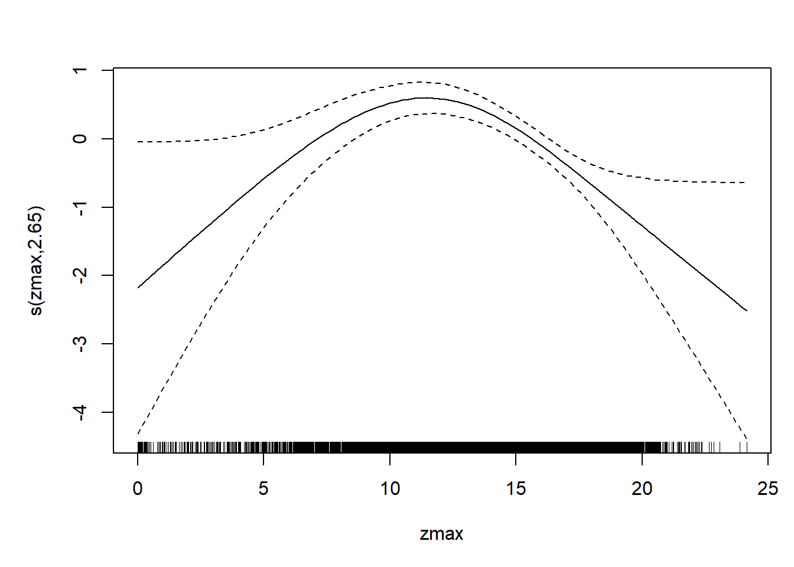
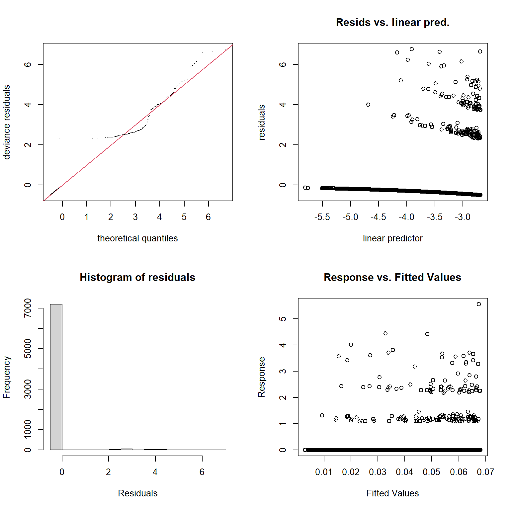
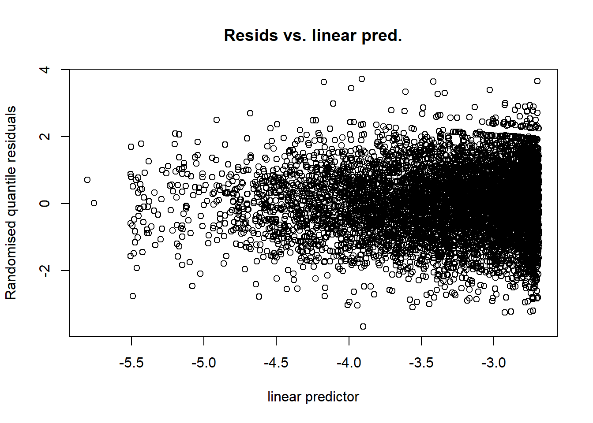
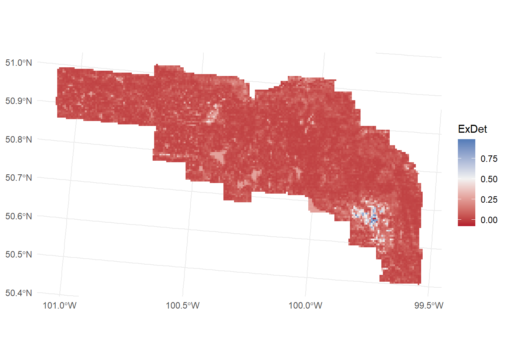

library(here)
library(dsm) # density surface models (loads mgcv)
library(dsmextra) # extrapolation checks
library(sf)
library(ggplot2)Fitting a density surface model
Introduction
A density surface model (DSM) is a two-stage model (Miller et al. 2013). The detection function corrects each segment’s count for the animals that were missed. A generalized additive model (GAM) then relates the corrected counts to covariates, so that density can be predicted anywhere the covariates are known. In this article we fit DSMs for moose in Riding Mountain National Park, check them, and assess whether predicting over the whole park is an extrapolation.
We follow the habitat-based approach of Roberts et al. (2016). Density is modelled from habitat covariates only, without a spatial smooth of the coordinates, so the model describes why moose are where they are rather than just where they were seen. Each species gets its own model. For comparison we also fit a purely spatial model, as in the dsm example A simple DSM analysis: Gulf of Mexico dolphins.
Prerequisites
dsmextra is not on CRAN; install it from GitHub with remotes::install_github("hambrecht/dsmextra"). These articles were built with a fork of dsm that includes speed improvements; the CRAN version gives the same results (see Packages).
We load the segment, observation and prediction tables from Adding covariates and building a prediction grid, and the detection function from Estimating the detection function.
model_data <- readRDS(here("workflow", "outputs", "model_data.rds"))
list2env(model_data, envir = environment())<environment: R_GlobalEnv>df_best <- readRDS(here("workflow", "outputs", "detection_function.rds"))Registered S3 methods overwritten by 'Distance':
method from
predict.fake_ddf dsm
print.fake_ddf dsm
print.summary.fake_ddf dsm
summary.fake_ddf dsm The observation table holds all species. For the moose model we keep only moose sightings, while the detection function, fitted to all species, still provides each sighting’s detection probability.
obs_moose <- obs[obs$Species == "Moose", ]
nrow(obs_moose)[1] 169mean(!segs$Sample.Label %in% obs_moose$Sample.Label)[1] 0.9777113Almost 98% of segments have no moose. This is typical of aerial surveys and it shapes the choice of response distribution.
Response and response distribution
Because the detection function includes covariates, each sighting has its own detection probability. The response is therefore abundance.est: the count in each segment divided by the detection probabilities of its sightings (a Horvitz–Thompson estimate). This is non-negative and continuous, with a large mass of exact zeros.
The Tweedie distribution (tw()) models exactly this: it has a point mass at zero and a continuous density above zero, with its power parameter estimated from the data. The alternative, quasi-Poisson, is a mean–variance relationship for integer counts rather than a full distribution, and it has no likelihood, so it cannot be compared by AIC. Tweedie was also the choice of Roberts et al. (2016) for zero-inflated line-transect data.
All models are fitted by REML with gamma = 1.4, which penalises wiggliness a little more than the default and guards against overfitting (Wood 2017).
A spatial model
The simplest DSM smooths abundance over the coordinates of the segment centroids. It shows where moose were seen but explains nothing about why.
dsm_xy <- dsm(abundance.est ~ s(x, y, bs = "ts"), df_best, segs, obs_moose,
family = tw(), gamma = 1.4, method = "REML")
summary(dsm_xy)
Family: Tweedie(p=1.147)
Link function: log
Formula:
abundance.est ~ s(x, y, bs = "ts") + offset(off.set)
Parametric coefficients:
Estimate Std. Error t value Pr(>|t|)
(Intercept) -16.2509 0.1327 -122.5 <2e-16 ***
---
Signif. codes: 0 '***' 0.001 '**' 0.01 '*' 0.05 '.' 0.1 ' ' 1
Approximate significance of smooth terms:
edf Ref.df F p-value
s(x,y) 6.404 29 2.931 <2e-16 ***
---
Signif. codes: 0 '***' 0.001 '**' 0.01 '*' 0.05 '.' 0.1 ' ' 1
R-sq.(adj) = 0.0134 Deviance explained = 12.8%
-REML = 670.98 Scale est. = 3.2688 n = 7358vis.gam(dsm_xy, view = c("x", "y"), plot.type = "contour", too.far = 0.05,
main = "", asp = 1)
Habitat models
We have two candidate habitat covariates: canopy cover (pabove2) and canopy height (zmax). Each enters as a thin-plate shrinkage smooth (bs = "ts") with k = 5, which caps each smooth at about four degrees of freedom. This keeps the fitted responses simple enough to interpret and to trust outside the exact conditions sampled. The shrinkage basis can shrink a smooth all the way to zero, so an unhelpful covariate effectively drops out.
dsm_p2 <- dsm(abundance.est ~ s(pabove2, bs = "ts", k = 5), df_best, segs, obs_moose,
family = tw(), gamma = 1.4, method = "REML")
dsm_zmax <- dsm(abundance.est ~ s(zmax, bs = "ts", k = 5), df_best, segs, obs_moose,
family = tw(), gamma = 1.4, method = "REML")
dsm_both <- dsm(abundance.est ~ s(pabove2, bs = "ts", k = 5) + s(zmax, bs = "ts", k = 5),
df_best, segs, obs_moose,
family = tw(), gamma = 1.4, method = "REML")Concurvity
Canopy cover and canopy height both describe the structure of the forest, so they are related. In a GAM this is called concurvity, the non-linear version of collinearity. When two smooths are concurve, their individual shapes become unstable and their uncertainty is inflated, even if the combined prediction looks reasonable. Values close to 1 are a warning sign.
cor(segs$pabove2, segs$zmax)[1] 0.7133894concurvity(dsm_both, full = FALSE)$estimate para s(pabove2) s(zmax)
para 1.000000e+00 6.274191e-32 3.345868e-33
s(pabove2) 9.880595e-31 1.000000e+00 5.712405e-01
s(zmax) 5.875180e-32 4.605427e-01 1.000000e+00Here the concurvity is moderate (about 0.5). With the full set of lidar metrics, however, cover and height metrics reached concurvity of 0.98 in the RMNP analysis, so every cover metric was paired with a height metric in a banned list, and only one of the two families may enter a model. We keep that rule here. Following Roberts et al. (2016), we choose the covariate that explains more deviance on its own, and then retain it only if its smooth is significant (\(p \le 0.05\)) and not shrunk away (effective degrees of freedom, EDF, of at least 0.85).
data.frame(
model = c("s(pabove2)", "s(zmax)"),
dev_expl = c(summary(dsm_p2)$dev.expl, summary(dsm_zmax)$dev.expl),
AIC = c(AIC(dsm_p2), AIC(dsm_zmax))
) model dev_expl AIC
1 s(pabove2) 0.01652254 1946.692
2 s(zmax) 0.03792701 1929.707Canopy height explains more than twice as much deviance as canopy cover. Neither explains much: a few percent of deviance explained is common for DSMs of sparse sightings, where most of the variation between segments is the chance of seeing an animal at all.
dsm_hab <- if (summary(dsm_p2)$dev.expl >= summary(dsm_zmax)$dev.expl) dsm_p2 else dsm_zmax
summary(dsm_hab)
Family: Tweedie(p=1.155)
Link function: log
Formula:
abundance.est ~ s(zmax, bs = "ts", k = 5) + offset(off.set)
Parametric coefficients:
Estimate Std. Error t value Pr(>|t|)
(Intercept) -15.80143 0.09328 -169.4 <2e-16 ***
---
Signif. codes: 0 '***' 0.001 '**' 0.01 '*' 0.05 '.' 0.1 ' ' 1
Approximate significance of smooth terms:
edf Ref.df F p-value
s(zmax) 2.65 4 7.371 3.87e-07 ***
---
Signif. codes: 0 '***' 0.001 '**' 0.01 '*' 0.05 '.' 0.1 ' ' 1
R-sq.(adj) = 0.00372 Deviance explained = 3.79%
-REML = 692.97 Scale est. = 3.526 n = 7358plot(dsm_hab, shade = TRUE, rug = TRUE, residuals = FALSE, pages = 1)
Model checking
gam.check() produces four standard diagnostic plots and a check of the basis size \(k\). For count data with many zeros, the Q–Q plot and the residuals against the linear predictor show striping from the zeros, which makes them hard to read.
gam.check(dsm_hab)
Method: REML Optimizer: outer newton
full convergence after 9 iterations.
Gradient range [-2.253881e-05,8.444614e-06]
(score 692.9719 & scale 3.526048).
Hessian positive definite, eigenvalue range [1.061253,923.0742].
Model rank = 5 / 5
Basis dimension (k) checking results. Low p-value (k-index<1) may
indicate that k is too low, especially if edf is close to k'.
k' edf k-index p-value
s(zmax) 4.00 2.65 0.78 0.66
Randomized quantile residuals avoid that problem (Dunn and Smyth 1996). If the model is adequate they should scatter evenly around zero, with no pattern against the linear predictor.
rqgam_check(dsm_hab)Loading required namespace: tweedie
Extrapolation
A DSM is only reliable where the prediction grid resembles the conditions that were surveyed. dsmextra identifies prediction cells whose covariate values lie outside the range of the segments (univariate extrapolation) or in combinations not seen in the segments (combinatorial extrapolation) (Bouchet et al. 2020).
covs <- c("pabove2", "zmax")
extrap <- compute_extrapolation(
samples = segs[, covs],
covariate.names = covs,
prediction.grid = st_drop_geometry(pred)[, c("x", "y", covs)],
coordinate.system = sp::CRS(SRS_string = paste0("EPSG:", LOCAL))
)
summary(extrap)
Table: Extrapolation
Type Count Percentage
------------ ------------ ------------
Univariate 9 0.07
Analogue 12205 99.93
----------- ----------- -----------
Total 12214 100
Table: Most influential covariates (MIC)
Type Covariate Count Percentage
------------ ------------ ------------ ------------
Univariate zmax 6 0.049
Univariate pabove2 3 0.025
----------- ----------- ----------- -----------
Total 9 0.074 pred$ExDet <- extrap$data$all$ExDet
ggplot(pred) +
geom_sf(aes(fill = ExDet), colour = NA) +
scale_fill_gradient2(low = "#b2182b", mid = "grey95", high = "#2166ac", midpoint = 0.5) +
theme_minimal()
The flight lines covered the park systematically, so almost all prediction cells fall within the range of sampled canopy conditions.
Other species
The same procedure applies to the other species. Following Roberts et al. (2016), the model’s complexity depends on how often a species was seen. Species with at least 40 sightings get a habitat model chosen as above. Species with fewer than 20 get an intercept-only model: this estimates the average density across the study area without trying to map it.
fit_species <- function(species, covariates = c("pabove2", "zmax")) {
obs_sp <- obs[obs$Species == species, ]
fit <- function(rhs) {
dsm(as.formula(paste("abundance.est ~", rhs)), df_best, segs, obs_sp,
family = tw(), gamma = 1.4, method = "REML")
}
if (nrow(obs_sp) < 20) return(fit("1"))
# One covariate (they are concurve): the one with most deviance explained
singles <- lapply(covariates, function(v) fit(sprintf("s(%s, bs = 'ts', k = 5)", v)))
best <- singles[[which.max(sapply(singles, function(m) summary(m)$dev.expl))]]
# Keep it only if significant and not shrunk away
st <- summary(best)$s.table
if (st[1, "p-value"] <= 0.05 && st[1, "edf"] >= 0.85) best else fit("1")
}
species_list <- c("Moose", "Deer", "Elk", "Bison", "Wolf")
dsm_species <- lapply(setNames(species_list, species_list), fit_species)
sapply(dsm_species, function(m) deparse(formula(m))) Moose
"abundance.est ~ s(zmax, bs = \"ts\", k = 5) + offset(off.set)"
Deer
"abundance.est ~ s(zmax, bs = \"ts\", k = 5) + offset(off.set)"
Elk
"abundance.est ~ 1 + offset(off.set)"
Bison
"abundance.est ~ 1 + offset(off.set)"
Wolf
"abundance.est ~ 1 + offset(off.set)" Canopy height is retained for moose and deer. For elk neither canopy metric meets the selection criteria, so elk also get an intercept-only model. Covariates other than the two used here would likely help. In the full RMNP analysis, which also considered elevation and distance to forest edge, elevation was the strongest predictor for all three species.
Saving
saveRDS(list(dsm_species = dsm_species, dsm_xy = dsm_xy),
here("workflow", "outputs", "dsm_models.rds"))References
Bouchet, Phil J., David L. Miller, Jason J. Roberts, Laura Mannocci, Catriona M. Harris, and Len Thomas. 2020. “Dsmextra: Extrapolation Assessment Tools for Density Surface Models.” Methods in Ecology and Evolution 11 (11): 1464–69. https://doi.org/10.1111/2041-210X.13469.
Dunn, Peter K., and Gordon K. Smyth. 1996. “Randomized Quantile Residuals.” Journal of Computational and Graphical Statistics 5 (3): 236–44. https://doi.org/10.1080/10618600.1996.10474708.
Miller, David L., M. Louise Burt, Eric A. Rexstad, and Len Thomas. 2013. “Spatial Models for Distance Sampling Data: Recent Developments and Future Directions.” Methods in Ecology and Evolution 4 (11): 1001–10. https://doi.org/10.1111/2041-210X.12105.
Roberts, Jason J., Benjamin D. Best, Laura Mannocci, et al. 2016. “Habitat-Based Cetacean Density Models for the U.S. Atlantic and Gulf of Mexico.” Scientific Reports 6: 22615. https://doi.org/10.1038/srep22615.
Wood, Simon N. 2017. Generalized Additive Models: An Introduction with R. 2nd ed. Chapman; Hall/CRC.